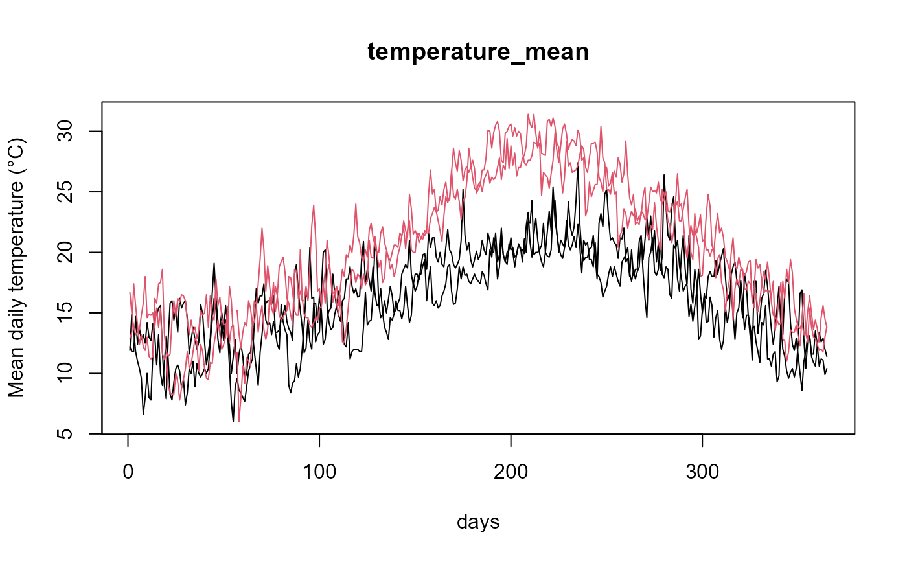

Builds an ldata object (package fda.usc), a list whose first
element df is a data.frame with one row per curve and whose remaining
elements are fdata objects, one per variable. The structure is that
of ldata, so it can be used directly with
fda.usc tools (plot, subset, [, fregre.lm,
classif.gsam, ...).
Usage
aemet2lfdata(
station_ids = NULL,
vars = NULL,
start_date = NULL,
end_date = NULL,
last_n_days = 30,
api_key = NULL,
df = NULL,
file = NULL,
inventory = NULL,
output_file = NULL,
verbose = FALSE,
control = list()
)Arguments
- station_ids
Character vector of AEMET station identifiers (column
station_idofaemet2inventory, notwmo_id). Required if downloading; otherwise used as a filter.- vars
Character vector of variables. By default, all numeric variables present in the data. Requested variables that are not in the data are dropped with a warning.
- start_date
Initial date.
- end_date
Final date.
- last_n_days
Number of last days if no dates are provided.
- api_key
AEMET API key.
- df
Optional data.frame (as returned by
aemet2df).- file
Optional input: a file (.csv, .RData or .rds), a vector of files, or a directory (its .csv/.rds/.RData files are read recursively), e.g. the
out_dirofaemet2download; withstation_ids, only the files of those stations are read.- inventory
Optional inventory: a data.frame returned by
aemet2inventoryor the path of a file saved withaemet2inventory(file = ...).- output_file
Optional output file (.RData or .rds).
- verbose
Logical.
- control
List passed to
aemet2df.
Value
An object of class c("ldata", "list") whose first element is
df and the remaining elements are fdata
objects.
Details
Data can be provided:
from an existing data.frame (
df)from file (
file)downloaded from AEMET via
aemet2df
Each functional object has:
one curve per station-year
365 points per curve (February 29 removed; in leap years the days after February 28 are shifted back one position, so column 60 is always March 1)
argvals = 1:365("days")
The first element, ldata$df, contains one row per curve, that is,
one row per station-year combination: the station metadata
(station_id, station_name, province, altitude
in metres, lon and lat in decimal degrees and wmo_id)
is repeated for every year of that station, and
year identifies the curve; n_days is the number of days of
that station-year present in the data (useful to discard incomplete years,
e.g. subset(ld, ld$df$n_days >= 360)). Row names are "station_year" and
coincide with the row names of every fdata element, so
nrow(ldata$df) == nrow(ldata[[v]]) for all variables.
Station metadata is taken from inventory (downloaded with
aemet2inventory if api_key is given and
inventory is NULL); missing values are filled from the data
itself. The daily AEMET data do not include coordinates, so without an
inventory lon and lat are NA.
See also
aemet2download for long periods and all stations,
aemet2fdata, ldata
Examples
# Example data shipped with the package (2 stations, 2023-2024)
f <- system.file("extdata", "aemet_example.csv", package = "aemet2fdata")
ld <- aemet2lfdata(file = f, vars = c("tmed", "tmax", "tmin", "prec"))
#> Station coordinates (lon, lat) not available: pass 'inventory' (see aemet2inventory()) or 'api_key'.
names(ld)
#> [1] "df" "tmed" "tmax" "tmin" "prec"
sapply(ld, NROW) # 4 curves (2 stations x 2 years) in every element
#> df tmed tmax tmin prec
#> 4 4 4 4 4
ld$df
#> station_id station_name province altitude lon lat wmo_id year
#> 1387_2023 1387 A CORUÑA A CORUÑA 57 NA NA <NA> 2023
#> 1387_2024 1387 A CORUÑA A CORUÑA 57 NA NA <NA> 2024
#> B228_2023 B228 PALMA, PUERTO ILLES BALEARS 3 NA NA <NA> 2023
#> B228_2024 B228 PALMA, PUERTO ILLES BALEARS 3 NA NA <NA> 2024
#> n_days
#> 1387_2023 365
#> 1387_2024 365
#> B228_2023 365
#> B228_2024 365
fda.usc::is.ldata(ld)
#> [1] TRUE
# fda.usc methods for ldata
plot(ld$tmed, col = as.integer(factor(ld$df$station_id)))

ld2023 <- subset(ld, ld$df$year == 2023)
sapply(ld2023, NROW)
#> df tmed tmax tmin prec
#> 2 2 2 2 2
# With station metadata: normally inv <- aemet2inventory(api_key)
# (approximate coordinates here, for illustration only)
inv <- data.frame(station_id = c("1387", "B228"),
lon = c(-8.4194, 2.6258), lat = c(43.3661, 39.5528))
ld <- aemet2lfdata(file = f, vars = c("tmed", "prec"), inventory = inv)
ld$df
#> station_id station_name province altitude lon lat
#> 1387_2023 1387 A CORUÑA A CORUÑA 57 -8.4194 43.3661
#> 1387_2024 1387 A CORUÑA A CORUÑA 57 -8.4194 43.3661
#> B228_2023 B228 PALMA, PUERTO ILLES BALEARS 3 2.6258 39.5528
#> B228_2024 B228 PALMA, PUERTO ILLES BALEARS 3 2.6258 39.5528
#> wmo_id year n_days
#> 1387_2023 <NA> 2023 365
#> 1387_2024 <NA> 2024 365
#> B228_2023 <NA> 2023 365
#> B228_2024 <NA> 2024 365
if (FALSE) { # \dontrun{
# Download from the API
api_key <- Sys.getenv("AEMET_API_KEY")
inv <- aemet2inventory(api_key = api_key)
ld3 <- aemet2lfdata(
station_ids = inv$station_id[1:2],
vars = c("tmed", "prec"),
start_date = "2019-01-01",
end_date = "2020-12-31",
api_key = api_key,
inventory = inv,
output_file = "aemet_ldata.rds"
)
plot(ld3)
} # }